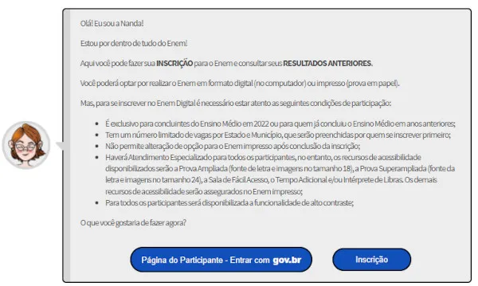
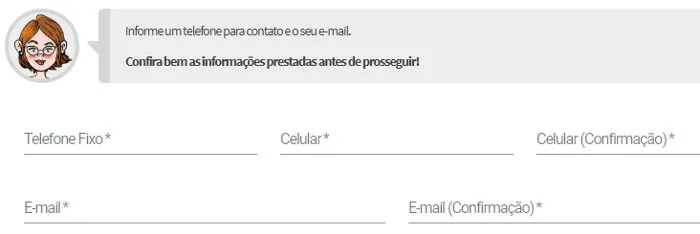

Como Fazer a Inscrição
As inscrições para o Enem 2023 estão abertas de 5 a 16 de junho. Quem é aluno do ensino médio ou já concluiu os estudos pode participar da maior competição do país. Você pode participar do Sistema de Seleção Integrada (SiSU) com a classificação do Enem 2023, concorrer a bolsas no Programa Universidades para Todos (ProUni), candidatar-se a universidades financeiras por meio do Fundo de Financiamento Estudantil (Fies) e estudar em Portugal.
1. Acesse a Página do Participante
As inscrições para o Enem 2023 são feitas por meio da Página do Participante Ao entrar no site, você será recebido pela assistente virtual "Nanda" e explicará que você pode se inscrever para o exame na página e se familiarizar com os resultados da versão anterior. Você precisa fazer login no portal gov.br para iniciar o aplicativo. Se o registro não existir, crie um e retorne à Página do Participante.
Ao clicar em "Inscrição", a robô Nanda solicitará que você clique na imagem correspondente ao que foi pedido por ela, o que o Inep adota como etapa de segurança. No exemplo abaixo, foi solicitado ao participante clicar no "avião".

2. Informe os dados pessoais
Após clicar na imagem, você terá que informar o seu CPF. Em seguida, será necessário digitar sua data de nascimento.
É obrigatório que o número do CPF seja seu, não é possível se inscrever com o documento de outra pessoa. A documentação servirá de identificação do participante durante todo o processo do Enem 2023 e também de outras edições, caso o estudante faça novamente a prova. Na tela seguinte, Nanda solicitará o preenchimento de informações como sexo, cor/raça, estado civil e nacionalidade.
Na sequência, você terá que informar a cidade e o estado onde nasceu.
Por último, a Nanda solicitará o CEP do local em que você mora. Quem não sabe pode procurar no site dos Correios.
Com o CEP preenchido, você verá o nome de sua cidade e seu bairro. Basta preencher o número e o complemento (opcional).
3. Atendimento Especializado
Esta etapa da inscrição do Enem é voltada apenas para quem precisa de alguma atendimento especializado para a realização das provas. Se você não necessita, basta clicar em "não preciso".
Caso precise de atendimento especializado, clique na opção "preciso". Em seguida, será necessário assinalar qual a sua condição, necessidade ou deficiência. O sistema lhe apresentará os recursos de acessibilidade disponíveis aos quais você terá direito.
Feita a solicitação do atendimento, é preciso anexar documentos que comprovem o direito, como atestados médicos, declarações assinadas por profissionais habilitados, certidão de nascimento da criança (para lactantes) ou atestado que comprove a gestação (para grávidas).
As adaptações previstas para o atendimento especializado podem ser no formato da prova, na duração do exame ou na sala e mobiliário.
4. Escolha a Língua Estrangeira
O próximo passo é escolher a língua estrangeira que fará parte da prova de Linguagens, Códigos e suas Tecnologias. As opções são Inglês e Espanhol, e alterações só são possíveis durante as inscrições do Enem.
5. Informe a Escolaridade
Você terá que informar o seu nível de escolaridade no momento da inscrição do Enem 2023. Atenção! Não será possível alterar a opção selecionada após terminar de se inscrever no exame.
Será necessário informar se está no ensino médio ou se já concluiu, se é/foi em escola pública ou privada e se é regular, supletivo ou Encceja.
Se marcar as opções "estou cursando o ensino médio, mas não estou na última série/ano" ou "não estou cursando e não concluí o ensino médio", a participação no Enem 2023 será apenas para treinamento, o que é chamado de treineiro, e o estudante não poderá usar as notas para se inscrever no SiSU, ProUni ou Fies.
6. Preencha o Questionário socioeconômico
O próximo passo da inscrição no Enem 2023 é o preenchimento do questionário socioeconômico. São 25 perguntas para que a organização do exame possa saber mais sobre o perfil econômico e social de você e da sua família.

7. Celular e e-mail
É necessário informar telefone fixo (opcional), celular e e-mail para que o Inep possa entrar em contato, caso seja necessário.
8. Escolha entre o Enem Digital ou Impresso
O sistema apresentará duas opções de provas: impressa e digital. Ambas serão aplicadas no mesmo dia e horário. No caso do Enem Digital, apenas quem está no último ano do ensino médio ou já concluiu os estudos pode participar. O limite da edição de 2022 foi de 101.100 vagas, por ordem de inscrição.
9. Escolha a cidade de prova
Agora você vai escolher o estado e o município para fazer as provas do Enem. Não é possível escolher a escola (local) de prova, apenas o município. Atente-se que a cidade de prova não pode ser alterada depois das inscrições. Se estiver de mudança de cidade, por exemplo, escolha a cidade na qual estará nos dias 5 e 12 de novembro.
10. Confirme seus dados
Nessa tela você vai conferir todos os seus dados e opções. Se estiver tudo certo, marque a caixinha "Confirmo a opção de língua estrangeira, modalidade e município de prova para a realização do Exame". Essas opções não poderão ser alteradas depois de confirmar a inscrição.
11. Pagamento da taxa
Com a inscrição finalizada, você precisará acessar a Página do Participante novamente para gerar a Guia de Recolhimento da União (GRU). Em 2022 a taxa foi de R$ 85. Na etapa de pagamento quem te auxiliará será o assistente virtual "Beto". Ele apresentará as opções para o pagamento da taxa: "Boleto" ou "Pix e cartão de crédito".

O boleto pode ser pago em casas lotéricas, agências bancárias, agências dos Correios que tenham o Banco Postal, internet banking e aplicativos de bancos. A confirmação de inscrição do Enem 2023 para quem é pagante só é feita após a confirmação do pagamento. A compensação bancária pode levar até uma semana, de acordo com o Inep.